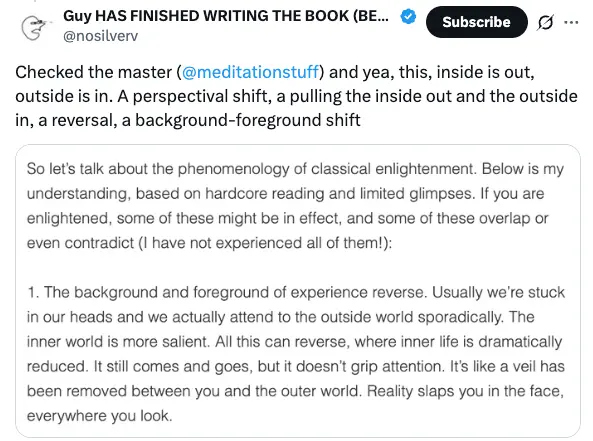
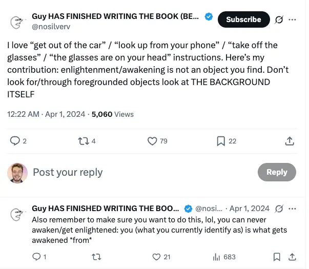
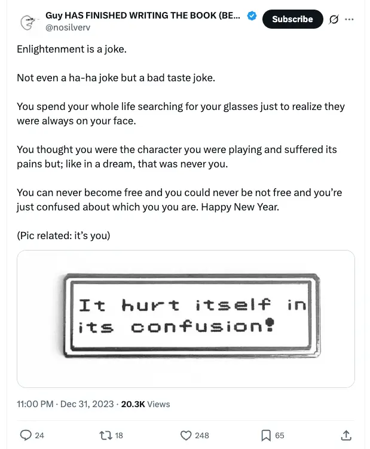
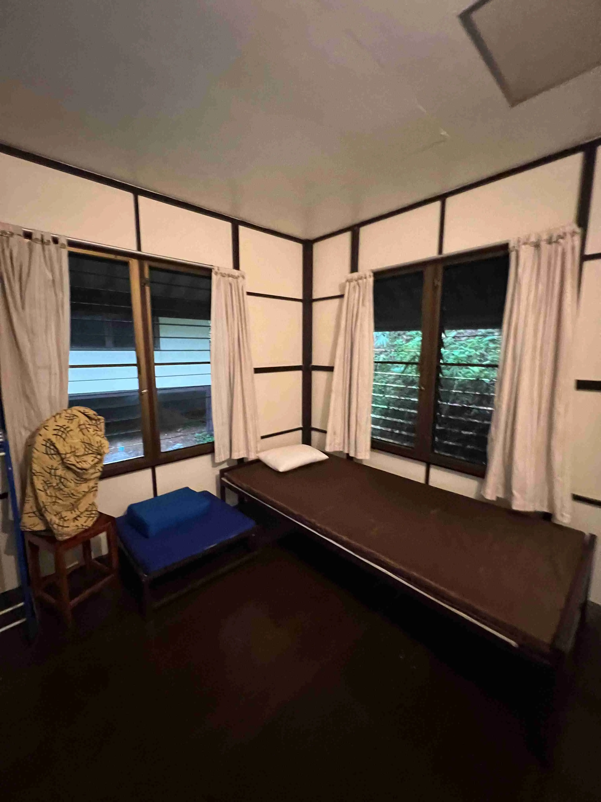
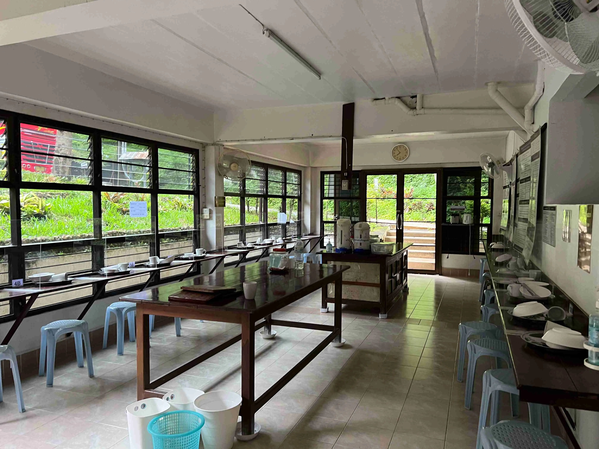
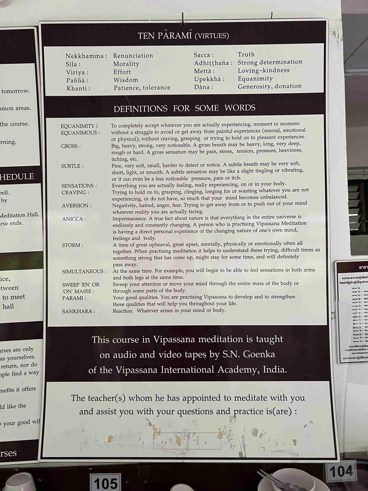
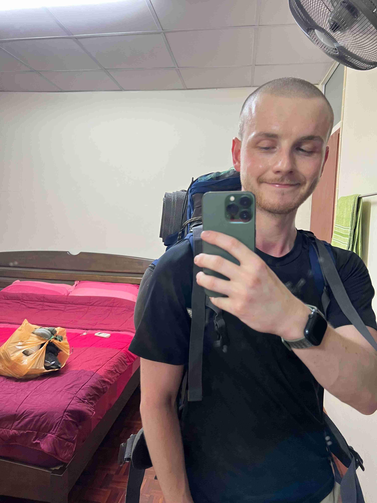
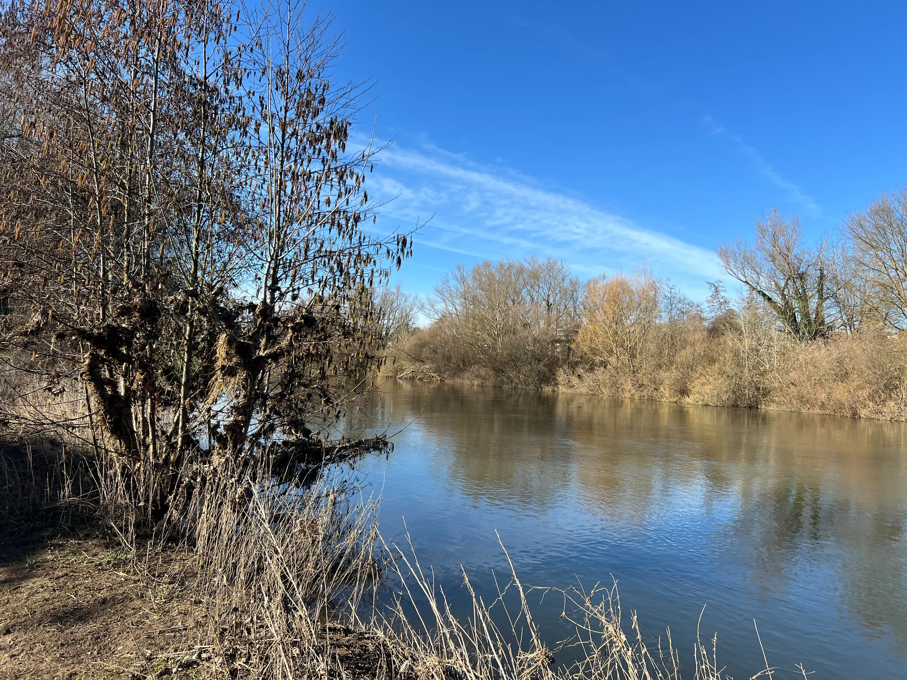
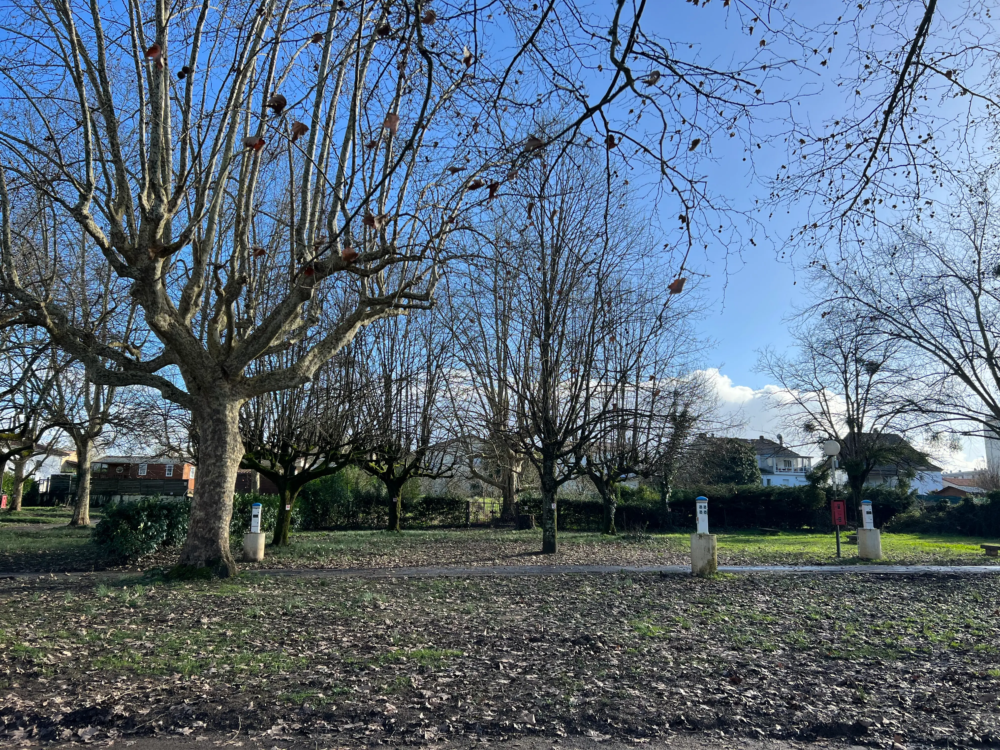
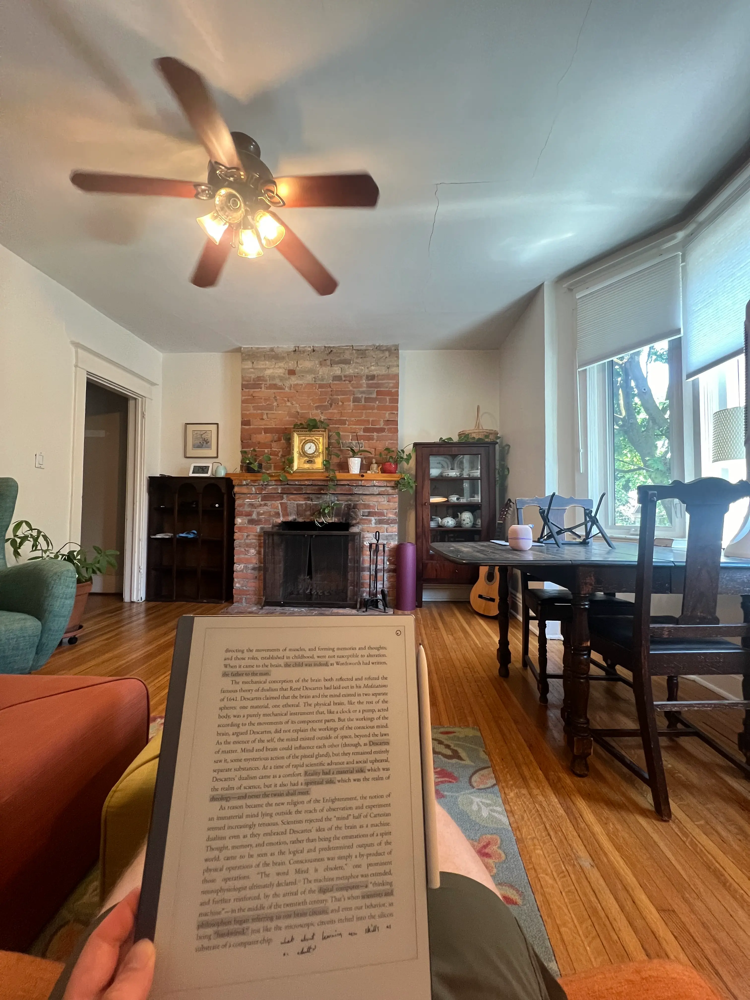

1ST EXPOSURE - Headspace - 2013
- I remember being maybe 17 and first hearing about Headspace - this was my first
- Probably ~2013
- Andy Puddicombe TED talk
- “Ok, cool, it’s good for focus, and maybe anxiety - I’m not anxious, but better concentration would be good”
- I remember signing up for Headspace, using it a bit, thinking it was kinda neat but non-profound
- “Ok, I guess that’s what meditation is! Kinda cool but whatever”
2ND EXPOSURE - Daniel Ingram & “45 Days to Awakening” - October 2022
Daniel Ingram
- At the tail end of 2022, my longest relationship ended after a few years of internal ~torment
- I went to the EA coworking space “Prague Fall Season”. I was mostly very socially anxious and spent 99% of my time alone and found it fairly painful to be there
- I met a group of post-rationalists who, when I was saying that my aversion to Effective Altruism was partially due to feeling like it’s all about preventing things rather than helping people (a total strawman, but you know) (also something I recently revisited in Questioning Effective Altruism) - said “oh, that’s kind of what the post-rationalist scene is about, and it sounds like Buddhism would be worth you looking into”
- I was recommended Daniel Ingram’s “Mastering the Core Teachings of the Buddha”. I went back to England, made flashcards from the first ~100 pages of the book, got my head around things like shamatha vs vipassana, insight, sila etc, general stuff about the Eight Fold Path.
- Imagine my surprise to learn that meditation isn’t just the Headspace thing of “improve your concentration and worry less” (which didn’t resonate with me - it felt more aimed at idk, American workaholics who knew that they were actively stressed out)
- Also, things like “enlightenment is real, and totally attainable - Daniel Ingram is an enlightened medical doctor”, etc
- Other things I remember learning → the 3 defilements (ignorance, craving, aversion)
45 Days to Awakening
- I found about about the Finder’s Course, probably via searching for meditation posts on the Effective Altruist forum
- Yes, this post by Kat Woods!
- I signed up for it, and did ~80% of it
- It’s funny - the course looks like a total scam. Their website is janky as hell, the main guy has total “snake-oil salesman” energy. But it’s good stuff!
- It involved ~1 hour of meditation a day, and group activities
Solo meditation
- The ~1 hour a day started with “focus on the breath at the tip of the nostrils”
- This is the only solo meditation I remember. I remember them talking a lot about how the course is great because you get to try loads of different meditation techniques, but finding that actually it seemed to just be like “a week of nostrils, then a week of nostrils + something else”, etc. It felt like a continuation/expansion, rather than totally different techniques.
- Anyway, back to the “tip of the nostrils” stuff:
- This actually kind of ruled. Over 1-2 weeks, I noticed a really big shift in how much of my nostrils I could feel, I remember there being like, a fascinating amount of detail (although I think it kind of came and went?)
- ==First ever meditation attainment!== → big increase in the resolution of how much I could feel at the tip of my nostrils
- ==Second ever meditation attainment== → I reached “access concentration”, which is where your attention effortlessly remains where you place it
- It only happened once, but it was really cool to experience. Just total effortless “locked in” concentration, on my nostrils
- Empirical proof → you can improve your powers of concentration!
Group meditation
- There was also group meditation - we were put into groups of ~4 people, and would meet every few days for ~1 hour
- The main thing I remember (perhaps it’s the only thing we did?) → talking about “what awareness feels like”
- E.g., “awareness is vast”, “awareness is without boundary”, “awareness never tires”, “awareness is effortless”
- I really liked this
- I think it might be trying to “foreground the background”, to get you to a non-dual state or stream entry experience
- Relevant tweets



I quit the “45 Days to Awakening Course”, for… some reason?
- I forget why… probably some relatively poorly thought out and intuitive thing like “I can’t spare 1 hour a day” → neuroticism around “wasted time” is one of my key failure modes
3RD exposure - 10-day vipassana retreat - September 2023
- I did a 10-day silent Goenka vipassana retreat in Thailand
- I did ~4-6 hours of meditation per day
- I didn’t do it purely for the meditation - I also took a journal and had some key insights
- I think journaling and not taking it 100% seriously (e.g., not trying to remain mindful in between sits) will have slowed me down a lot
Why did I go?
- I was hoping that it’d “convince” me to become a meditator
- I was hoping that, to do so many hours in such a short space, I’d get some solid attainments and be like “oh shit, cool, I should clearly keep doing this”, become a lifelong meditator, etc
- This didn’t work! I’ll discuss my “attainments” below. But, at the end, when they were like “this was just a drop in the bucket, now you need to do this for 2 hours a day for the foreseeable future”, I (like I imagine 99% of attendees) was like “ahhh… nah”
- That’s why I wrote this Substack post - My 10-day silent meditation retreat didn’t work*
Possibly actually less “attainments” than the 45 Days course, somehow
- I had less like “wow” moments
- I think partially because of the “hardcore” nature of vipassana - maybe my concentration improved, but also the >4 hours/day felt fairly coercive so I was fighting being there a fair amount
- I think I actually got more value from being away from technology for 10 days, being totally alone with my thoughts/experience, etc
Cool experience 1 → “sits of strong determination”
- 1 hour meditations where you weren’t supposed to move or fidget
- Being with extreme knee pain and just… looking at it. And then, at the end of the hour, finally getting to uncross my legs, watching the pain just… vanish - really cool and novel
Cool experience 2 → just, the whole experience
- No talking for 10 days. No technology. Great food. Being gender split, existing next to ~20 men (E.g. at dinner time) but no eye contact, no talking. Just a very cool and novel experience!
- Watching the Goenka talks every evening
Main “attainment” → after the retreat, “oh, my mind is toxic”
- The main thing I got, really, was noticing how nasty my mind is by default
- Once we were allowed to talk again, I noticed disliking a few of the other men, and I had more “meta-cognition”, so instead of just thinking that these men sucked, I also noticed myself noticing these things, saw the negative flavour of my mind, how judgemental it is, etc
- This actually felt worse, like not an upgrade but a downgrade (“ew, I don’t like noticing this!”). But it was clearly an insight into my mind, and better than ignorance
- This realisation, post-retreat, was why I wrote this Substack post → “The meditation retreat was working”
- 👇 My private hut

- 👇 Where we ate together, whilst avoiding eye contact, lol

- 👇 One of the signs

- 👇 I felt so reborn that I shaved my head on like day 7. Funny to talk to other attendees who were there with me on day 10 and they were like “…you had hair at the start, right??”

4TH EXPOSURE - Stream entry - Feb 2024
- See Substack post - Consensus-ism part 2
- I got explained into something like a stream entry experience, via repeated Socratic dialogues with some friends who were trying an experimental new technique
- This perfectly describes what it was like:
The background and foreground of experience reverse.
Usually we’re stuck in our heads and we actually attend to the outside world sporadically. The inner world is more salient.
All this can reverse, where inner life is dramatically reduced. It still comes and goes, but it doesn’t grip attention. It’s like a veil has been removed between you and the outer world. Reality slaps you in the face, everywhere you look.
- So, this really showed me that there’s a “there there”, that Buddhism is pointing at empirical things. This happened to me in Feb of 2024 and my life and experience has been radically changed. This shit is real
- I had a call with Sasha Chapin after this happened → I emailed him like “yoooo, I think the ‘deep okayness’ thing that you wrote about has happened to me”, and we had a great call. He said it sounded like
- 👇 My stream entry spot (but it was at night)

- 👇 My stream entry spot, looking the other way

I had a “kensho” experience, which was my first exposure to that idea
5TH EXPOSURE - Jhourney retreat - August 2024
- I did a Jhourney at-home retreat
- I forget the exact logistics - it may have been ~5 days?
- I had either 1 or 2 jhana experiences - I think 2? Although only one remains super salient to me
- I was in the basement of my friend’s house in Toronto. They were hosting upstairs, and as I was in the middle of this retreat, I attended the social thing at their house but got there early so I could do my meditation
- I followed the instructions (basically “focus on a positive sensation and allow it to grow”), and ended up in jhana 2 → a gratitude spiral
- I wept with joy at all the amazing memories from my life, from childhood onwards. I remember just feeling like “oh my god, thank you. This has been incredible. I can’t believe I’ve gotten to experience all of this. What a profound gift”
- I ended the meditation and went upstairs, with a huge grin on my face, and joined my 5 friends
- I also got to the same place that I got to from the vipassana retreat, of noticing the nastiness of my mind
- I went on a walking meditation and noticed how judgemental I was re: the people I’d see on the streets of Toronto
- See a fat person → “ugh, look how fat they are, how can you do that to yourself”
- See an old hunched over person → “ugh, imagine letting yourself get that hunched over, why didn’t they learn to stretch/do yoga/go to a physio”, etc
- I went on a walking meditation and noticed how judgemental I was re: the people I’d see on the streets of Toronto
- 👇 My sublet in Toronto where I did my Jhourney retreat - such a gorgeous place 🥰

6TH EXPOSURE → call with Sasha Chapin in Toronto - Sep 2024
- I had a coaching call with him to discuss like “dude, I thought healing was my path, now I feel healed enough, idk what to do now”
- I asked him to tell me to meditate, and he was like “do open awareness mediation bro”